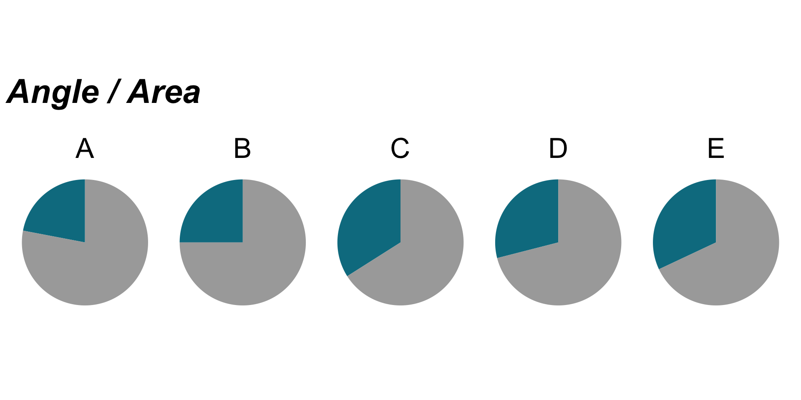
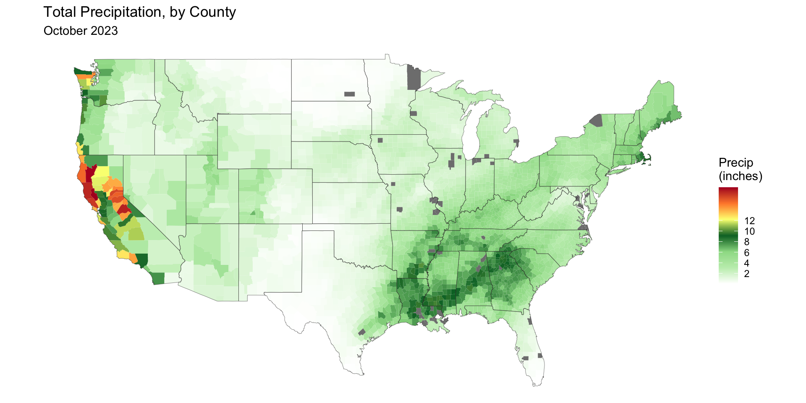
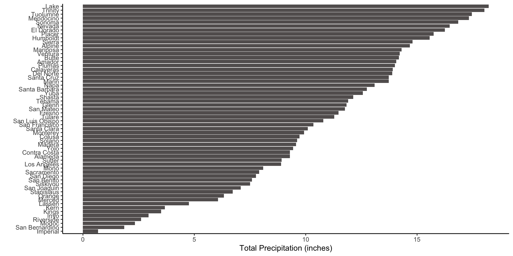
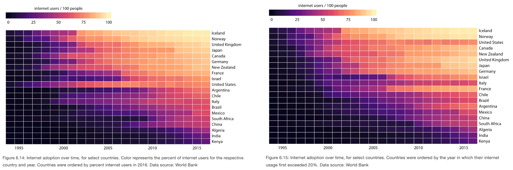
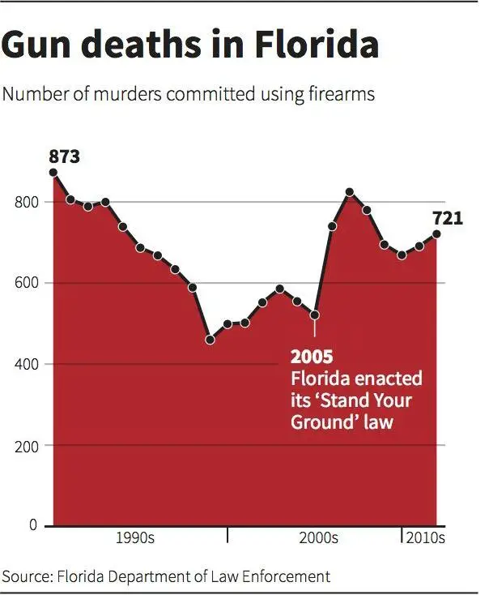

We understand complex numbers better when they’re represented visually
“Exams will have a total of 137 points rather than the usual 100. This scoring system has no efect on the grade you get in the course, but it seems to make you happier”
Early years: exam graded 0 - 100 with an average score of 72 points = lots of complaints
Later years: exam graded 0 - 137 with an average score of 96 points = no complaints
Albert Cairo’s visualization of the scores from Thaler’s exam case study
Vision is our most well-developed sense
Mapping data into visual properties is powerful
Mapping?
How values of a variable(s) of interest are represented by visuals (e.g height of bar, shaded region of area plot, color of data points)
How do you choose the right graphic form to represent your data?
“If I had the answer to that, I’d be rich by now…I have no idea, but I can give you some clues to make your own choices based on what we know about why and how visualization works”
Let’s say you want to compare unemployment rates of 5 countries: A, B, C, D, E (the actual values here are not important).
How would you map the unemployment rates to visual properties in a way that enables your readers to accurately compare values without having to read all the numbers?
Different methods of encoding the same data

“Hierarchy of elementary perceptual tasks”
William S. Cleveland & Robert McGill (1984) Graphical Perception: Theory, Experimentation, and Application to the Development of Graphical Methods, Journal of the American Statistical Association, 79:387, 531-554, DOI: 10.1080/01621459.1984.10478080
a viewer performs one or more of these mental-visual tasks (judging position, perceiving angles / areas, etc.) to extract the values of real variables represented on most graphs
successful charts are constructed based on elementary tasks “as high in the hierarchy as possible”
Albert Cairo’s recreation of Cleveland & McGill’s Hierarchy of Elementary Perceptual Tasks
A recreation of Cleveland & McGill’s hierarchy of elementary perceptual tasks, by Albert Cairo
Exercise: How many times bigger is the larger circle?
01:00
Exercise: How many times bigger is the larger bar?
01:00
Both the circles & rectangles differ by a magnitude of 7
Caveats to the hierarchy
1. Cleveland & McGill only considered statistical charts. What about data maps, for example, that rely on area / shading / hue, which fall lower on the hierarchy?
Caveats to the hierarchy - an example
Lower scale methods can be appropriate when the goal is to reveal general patterns. For example, a choropleth map displays divided geographical areas / regions, which are colored in relation to a numeric variable.
1. Cleveland & McGill only considered statistical charts. What about data maps, for example, that reply on area / shading / hue, which fall lower on the hierarchy?
2. No method of choosing a graphic form is perfect! It’s important to think critically about your graphic’s purpose and how best to represent your data to serve that purpose.
Caveats to the hierarchy - an example
Consider how you might display the same data in the following Sankey diagram depicted the flow of refugees in 2022, using graph types from the top of Cleveland & McGill’s hierarchy. What is the purpose of this chart?
Think about the task(s) you want to enable or message(s) you want to convey. For example, do you want to compare, see change or flow, reveal relationships or connections, envision temporal or spatial patterns.
Consider the number of variables and the number of data points, as well as the data types you’re working with. For example, do you have several vs. many data points? How many categorical and/or numeric variables? Are your variables ordered or not ordered? Data types can dictate which graphical form is appropriate.
Try different graphic forms, especially if you have more than one task to enable or message to convey.
Arrange the components of the graphic to make it as easy as possible to extract meaning from your graphic quickly.
Test the outcomes of your graphic on others, particularly on those who are representative of the audience you are trying to reach.
Tips for choosing the right graphic form
Think about the task(s) you want to enable or message(s) you want to convey. For example, do you want to compare, see change or flow, reveal relationships or connections, envision temporal or spatial patterns.
Consider the number of variables and the number of data points, as well as the data types you’re working with. For example, do you have several vs. many data points? How many categorical and/or numeric variables? Are your variables ordered or not ordered? Data types can dictate which graphical form is appropriate.
Try different graphic forms, especially if you have more than one task to enable or message to convey.
Arrange the components of the graphic to make it as easy as possible to extract meaning from your graphic quickly.
Test the outcomes of your graphic on others, particularly on those who are representative of the audience you are trying to reach.
1. What task(s) to enable / message(s) to convey 2. Number of variables & data points, data types
Think about the task(s) you want to enable or message(s) you want to convey. For example, do you want to compare, see change or flow, reveal relationships or connections, envision temporal or spatial patterns.
Consider the number of variables and the number of data points, as well as the data types you’re working with. For example, do you have several vs. many data points? How many categorical and/or numeric variables? Are your variables ordered or not ordered? Data types can dictate which graphical form is appropriate.
Try different graphic forms especially if you have more than one task to enable or message to convey.
Arrange the components of the graphic to make it as easy as possible to extract meaning from your graphic quickly.
Test the outcomes of your graphic on others, particularly on those who are representative of the audience you are trying to reach.
3. Try different graphic forms
Recall our choropleth map from earlier, which displays total precipitation by US county. What if we want to compare precipitation between CA counties? Choosing a graphical form from the top of the hierarchy (e.g. bar chart) may be more effective.


If we want to show both big picture patterns and detailed comparisons, we may consider including multiple graphic forms in the same visualization.
Tips for choosing the right graphic form
Think about the task(s) you want to enable or message(s) you want to convey. For example, do you want to compare, see change or flow, reveal relationships or connections, envision temporal or spatial patterns.
Consider the number of variables and the number of data points, as well as the data types you’re working with. For example, do you have several vs. many data points? How many categorical and/or numeric variables? Are your variables ordered or not ordered? Data types can dictate which graphical form is appropriate.
Try different graphic forms, especially if you have more than one task to enable or message to convey.
Arrange the components of the graphic to make it as easy as possible to extract meaning from your graphic quickly.
Test the outcomes of your graphic on others, particularly on those who are representative of the audience you are trying to reach.
4. Arrange components of the graphic
How does the influence of in-theater advertising change across generations?
4. Arrange components of the graphic
How does the influence of in-theater advertising change across generations?
4. Arrange components of the graphic
Let’s say we’re interested in:
changes in the amount spent on Social Security over time (2012-2015) relative to other major spending categories?
4. Arrange components of the graphic
Let’s say we’re interested in:
changes in the amount spent on Social Security over time (2012-2015) relative to other major spending categories?
the amount of money spent on Social Security over time (2012-2015)?
4. Arrange components of the graphic
Do we want to convey:
internet usage in 2016? or
4. Arrange components of the graphic
Do we want to convey:
internet usage in 2016? or
how early or late adoption of internet relates to current-day usage?

Tips for choosing the right graphic form
Think about the task(s) you want to enable or message(s) you want to convey. For example, do you want to compare, see change or flow, reveal relationships or connections, envision temporal or spatial patterns.
Consider the number of variables and the number of data points, as well as the data types you’re working with. For example, do you have several vs. many data points? How many categorical and/or numeric variables? Are your variables ordered or not ordered? Data types can dictate which graphical form is appropriate.
Try different graphic forms, especially if you have more than one task to enable or message to convey.
Arrange the components of the graphic to make it as easy as possible to extract meaning from your graphic quickly.
Test the outcomes of your graphic on others, particularly on those who are representative of the audience you are trying to reach.
To enlarge image (in Chrome), right click on image > Open image in New Tab
What is the take home message of this graphic?
What is effective? What is confusing?
03:00
5. Test the outcomes of your graphic on others
Baseline at the top is clear, suggesting that bars are falling from it. Clear metaphor (dripping blood).
Eyes are drawn to baseline at the bottom, on top of which data are sitting. Headline indicates rise but visually represented by falling. Thick black line makes white area stand out over red (data).
5. Test the outcomes of your graphic on others
Business Insider published an updated graphic (originally designed by Reuters), which was submitted by a reader that, “more clearly shows that gun deaths increased between 2005 and 2007 by flipping the y-axis”:

5. Test the outcomes of your graphic on others
Critiquing a data visualization:
Identify the primary and secondary insights that the graphic is trying to convey.
Identify elementary perceptual tasks (e.g. comparing lengths, angles) and what is confusing or difficult to do.
Identify how to use more effective elementary perceptual tasks for the primary and secondary insights.
Identify points of confusion and decide how those could be addressed (e.g. a different graphic form, rearranging components, including an introduction graph, better annotation)